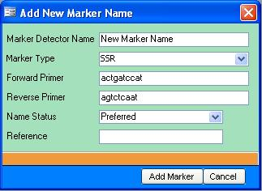
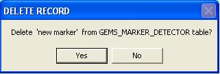
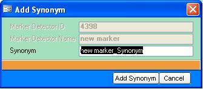
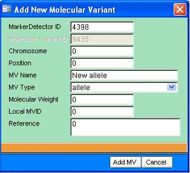
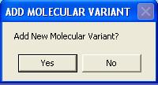
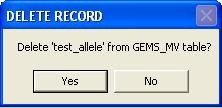
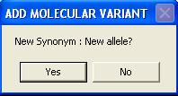
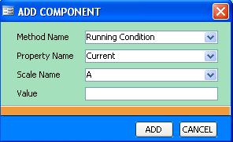
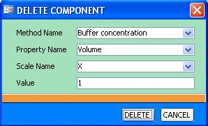

TDM GEMS Catalog 5.5
From ICISWiki
Contents |
Introduction
GEMSCat (short for GEMS Catalogue) is an application created to retrieve,insert, update and delete records from the GEne Management System. The Main Screen of GEMSCat is basically divided into 5 parts.
- Search Facility
- Marker Names Results
- Marker Information Details
- Molecular Variants Details
- Protocol Details
Search Facility
The GEMSCat Search facility has the following search options:
- Search for Marker Names - This option is for searching specific names of markers
example:
RM* - look for markers with names beginning with ' RM ' - Search for Markers given a Molecular Variant Name - This option is for searching markers that have specific molecular variant
example:
*100* - look for markers with molecular variants having ' 100 ' in its name. - Search for Markers given a Forward or Reverse Primer - This option is for searching markers that uses a given forward primer or reverse primer.
example:
*aatggagca* - look for markers which has forward primer or reverse primer having ' aatggagca ' sequence - Search for Markers given a Marker Technology Type - This option is for searching markers given a specific Marker Technology Type
example:
SSR - look for all SSR markers
To search:
- Type search string in the Search text
- Click on one of the search options (Marker, Allele Name, Primers, Marker Type)
- Click Search button.
Note: Wildcard characters be used in the Search String
Marker Names (Search Result)
Names of Markers that match the Search criteria shows up in the Markers Name Result. The example above is a result of a search for markers with names beginning with wms (Search String : "wms*"). The Markers Names Result has four(4) function buttons for adding a new marker, deleting a marker, adding a new synonym and for loading multiple markers into the the GEMS database.
Add a New Marker
To add a new marker:
- click on the button in the Marker Names Result area.
- Add New Marker Name Form should appear
 - Type marker name in the Marker Detector Name textbox. The Add Marker button is initially disabled. If the marker name entered does not exist in the database, the Add Marker button will be enabled.
- Fill out all other necessary information
- Click Add Marker button.
Delete a Marker
To delete a marker:
- Select the marker from the Marker Names Result.
- Click on the button.
- A confirmation message to delete marker will be shown.

Click Yes to confirm.
Add a Synonym
To add a marker synonym :
- Select the marker which will be given a new synonym from the Marker Names Result.
- Click on the button.
- A form for adding new synonym will be shown.
 - The Add Synonym button will be enabled if the name entered in the Synonym textbox does not exist in the database. Add Synonym button is initially disabled.
- Click Add Synonym button.
Add Multiple Markers (Batch Load)
To add multiple markers:
Note: Template for creating a batch marker file is here.
Marker Information
The Marker Information Detail shows more information on the chosen marker from the Marker Name Results Area. From the example above, the chosen marker is wms155. The Synonyms or other Names of the chosen marker is shown on the Other Names section. In the same example, wms 155 has synonyms : wms155-3A and wms155-w.
This area is also used for editting the information on the chosen Marker.
Molecular Variant Information
Add a New Molecular Variant Name
To add a new Molecular Variant name:
- click on the button in the Molecular Variant Information Area.
- Add new form for adding a molecular variant will appear.
 - Type the molecular variant name in the MV Name textbox. The Add MV button is initially disabled. If the molecular variant name entered does not exist for selected marker in the database, the Add Mv button will be enabled.
- Fill out all other necessary information
- Click Add Mv button.
- A message to add another Molecular variant will appear.
 - Click Yes to add another molecular variant name.
Delete a Molecular Variant
To delete a molecular variant name:
- Select the molecular variant to be deleted from the Molecular Variant Information.
- Click button.
- A confirmation message to delete molecular variant name will be shown.

Click Yes to confirm.
Add a Synonym to a Molecular Variant Name
To add a new Synonym for Molecular Variant name:
- click on the button in the Molecular Variant Information Area.
- The same form for adding a molecular variant will appear but with disabled chromosome, position and mvtype textboxes disabled
- Type the molecular variant name in the MV Name textbox. If the synonym entered does not exist for the selected molecular variant name in the database, the Add Mv button will be enabled.
- Fill out all other necessary information
- Click Add Mv button.
- A message to add another synonym will appear.
 - Click Yes to add another synonym.
Protocol Information (SSR)
The application currently adds protocol specific to SSR Marker Technology. The Protocol Information Details has a list of protocols and information details for each protocol.
The list of protocols has two function buttons. One to add a new protocol and the other to delete a protocol.
Add a Protocol
To add a new protocol:
Note: Add protocol will only add an SSR template protocol to the list of protocols. To modify the protocol, use the function buttons on each tab (PCR Gel, PCR Reaction, Gel Recipe and Electrophoresis).
Delete a Protocol
To delete a protocol:
- Select the protocol number to be deleted
- Click button.
- The deleted protocol number should now be deleted from among the protocols in the list of protocols.
Caution: Different markers may have the same protocol.
PCR and Gel Recipe Tabs
Since PCR Recipe and Gel Recipe Tabs have same properties (both have sets of chemicals with initial concentration and Volume), the instructions below both apply to the PCR Recipe Tab and the Gel Recipe Tab.
Add Recipe Entry
- Enter the name of the chemical, concentration and volume and its respective scales.
- Click Add button.
- If the chemical name already exist, an error message will be shown.
Delete Recipe Entry
- click on the row to be deleted
- click button
- To confirm deletion, a form will be shown with the information of the Recipe Entry that will be deleted.
- click Delete.
Edit Recipe Entry
- Select a row entry from the Gel Recipe
- Click Edit button
- An Edit Recipe Entry form with information on the selected Recipe Entry will be shown. Modify entry values.
- Click Save button.
PCR Reaction and Electrophoresis Tabs
Entries in the PCR Reaction and Electrophoresis tabs are presented using its property name, method and scales. There are only two function buttons as the entries in these two tabs can be directly editted.
Add Component
- Click button.
- An Add Component form will appear
 - Fill out all necessary information. If the method name already exist for the protocol, an error will be shown.
- Click Add button.
Delete Component
- Select the component to be deleted
- Click button.
- To confirm deletion, a Delete Component form will be shown
 - Click Delete button